02/01/2019 — Nam 15 tuổi người Mỹ gốc Phi có ST chênh lên và sóng T đảo ngược. Bệnh cơ tim phì đại hay bình thường (“biến thể”)?
Bản dịch tiếng Việt của bài "15 yo AAM with ST Elevation and T-wave Inversion. Hypertrophic Cardiomyopathy or Normal (“Variant”)?" – Dr. Smith’s ECG Blog. Giữ nguyên toàn bộ 17 hình ảnh và 2 video của bản gốc.
Đây là bình thường hay bệnh cơ tim phì đại tắc nghẽn (HOCM)?
Mẹ của một bé trai 15 tuổi người Mỹ gốc Phi đưa con đến phòng khám để khám sức khỏe thể thao (sports physical). Gia đình có tiền sử đột tử. Phòng khám đã ghi điện tâm đồ này và tỏ ra lo ngại:

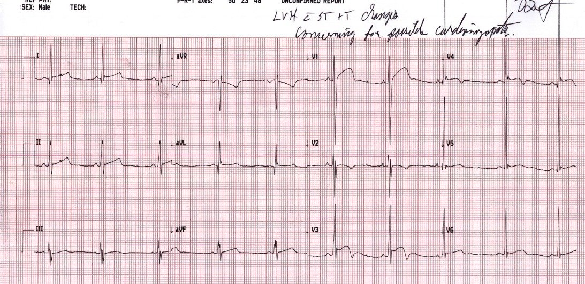
Trả lời: Không.
Gần như chắc chắn đây là một điện tâm đồ bình thường ở một nam thiếu niên người Mỹ gốc Phi. Có một khả năng rất nhỏ là HOCM, nhưng hình thái này là điển hình của một biến thể bình thường (normal variant). Ngay cả việc gọi nó là biến thể bình thường cũng là một thuật ngữ mang tính lấy chủng tộc mình làm trung tâm, như thể cái bình thường của người da trắng mới là bình thường thực sự. Đây là bình thường đúng nghĩa đối với một thanh thiếu niên người Mỹ gốc Phi.
Điện thế cao là điển hình ở một nam giới trẻ, chơi thể thao, thành ngực mỏng.
Người mẹ lo lắng và đưa cậu bé đến khoa cấp cứu (ED), nơi tôi khám cho cậu và ghi điện tâm đồ này, hơi khác một chút nhưng vẫn nằm trong mức biến thiên bình thường từ ngày này sang ngày khác:

V4 là hình ảnh “biến thể” lành tính kinh điển và là chuyển đạo dễ nhận ra nhất của hình thái điện tâm đồ này. Hình ảnh này được gọi là “sóng T đảo ngược lành tính” (Benign T-wave Inversion, BTWI) trong blog này, theo cách Chou đặt tên trong sách giáo khoa của ông.
BTWI là một biến thể bình thường đi kèm với tái cực sớm. K. Wang đã nghiên cứu hình ảnh này. Ông xem lại điện tâm đồ của toàn bộ 11.424 bệnh nhân có ít nhất một điện tâm đồ được ghi trong năm 2007 tại Hennepin County Medical Center (nơi tôi làm việc) và tách riêng 101 ca sóng T đảo ngược lành tính. 97 ca là người da đen. 3,7% nam giới da đen và 1% nữ giới da đen có dấu hiệu này. 1 trong 5099 bệnh nhân da trắng có dấu hiệu này. Ngoài tỷ lệ 8,8% (9 trên 109) ở nam giới da đen 17-19 tuổi, dấu hiệu này phân bố đều theo các nhóm tuổi.
Tôi đã xem lại 101 điện tâm đồ này, và điều làm tôi chú ý là:
1. Khoảng QT tương đối ngắn (QTc dưới 425ms)
2. Các chuyển đạo có sóng T đảo ngược thường có sóng J rất rõ.
3. Sóng T đảo ngược thường ở các chuyển đạo V3-V6 (ngược với hội chứng Wellens, trong đó sóng T đảo ngược ở V2-V4)
4. Sóng T đảo ngược không tiến triển và nhìn chung ổn định theo thời gian (ngược với Wellens, vốn luôn luôn tiến triển).
5. Các chuyển đạo có sóng T đảo ngược (trước tim bên trái) thường có ST chênh lên một ít
6. Các chuyển đạo trước tim bên phải thường có ST chênh lên điển hình của tái cực sớm kinh điển
7. Sóng T đảo ngược ở các chuyển đạo V4-V6 đi sau sóng S rất nhỏ
8. Sóng T đảo ngược ở các chuyển đạo V4-V6 đi sau sóng R biên độ cao
9. QRS hoàn toàn không giãn rộng.
10. II, III và aVF cũng thường có sóng T đảo ngược.
HOCM có thể có một số đặc điểm này, nhưng một đặc điểm khác giúp phân biệt HOCM là bằng chứng phì đại vách, với sóng R cao (thậm chí hình kim) ở V1 và/hoặc sóng S sâu (và hình kim) ở V6, có một hoặc cả hai. Tôi đưa ra 2 ví dụ về điều này ở bên dưới.
Ca bệnh tiếp diễn:
Chúng tôi đã làm siêu âm tim tại giường:
Mặt cắt trục dọc cạnh ức – bình thường
Mặt cắt trục ngắn cạnh ức — bình thường
Siêu âm tim cản âm chính thức làm sau đó, do một bác sĩ tim mạch nhi đọc, cũng bình thường.
Những điểm cần học:
Mặc dù một điện tâm đồ như thế này có thể là biểu hiện của HOCM, nhưng trong đại đa số trường hợp, đó là một dấu hiệu bình thường ở nam giới người Mỹ gốc Phi dưới 20-25 tuổi, và cả lớn tuổi hơn.
Tôi tin rằng có những khác biệt rõ rệt giữa điện tâm đồ của HOCM và điện tâm đồ của BTWI vì, qua những ví dụ tôi đã thấy, hình thái của chúng khác nhau một cách tinh tế nhưng rõ ràng.
Dưới đây là một số điện tâm đồ để so sánh: Hai điện tâm đồ cuối bên dưới là HOCM, được cho là giống sóng T đảo ngược lành tính. Tôi nghĩ chúng trông khác biệt. (Các tài liệu tham khảo này do Brooks Walsh cung cấp cho tôi):
Hai điện tâm đồ đầu tiên lấy từ ấn phẩm này: Drezner JA và cs. Abnormal electrocardiographic findings in athletes: recognising changes suggestive of cardiomyopathy. Br J Sports Med 2013;47:137-52.
https://bjsm.bmj.com/content/bjsports/47/3/137.full.pdf (toàn văn bài báo trên Br J Sports Med)
Điện tâm đồ này được trình bày là bình thường, và tôi đồng ý:

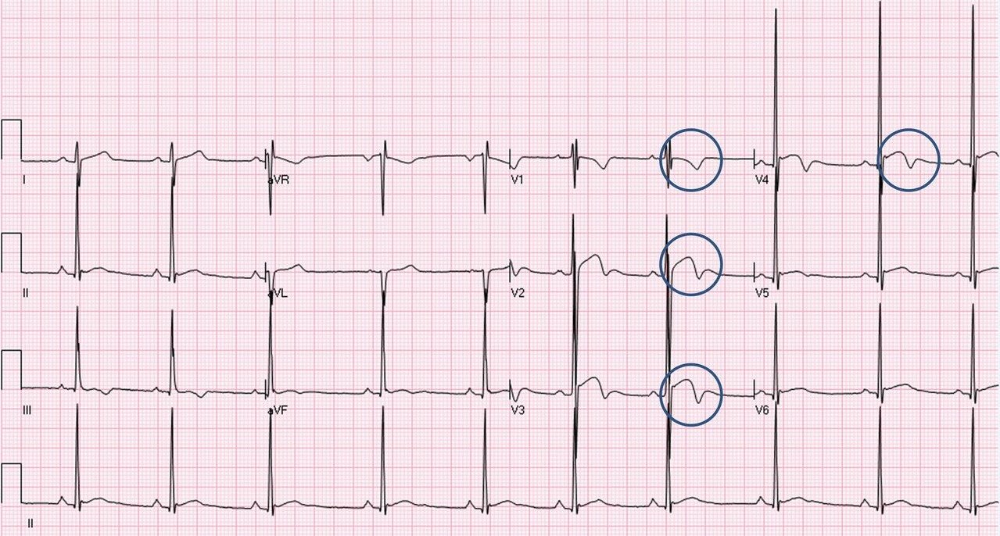
Tuy nhiên, sóng T đảo ngược lành tính thường có sóng T đảo ngược ở V5/V6; do đó, dấu hiệu này chắc chắn không đặc hiệu cho HOCM.
Điện tâm đồ này là HOCM:

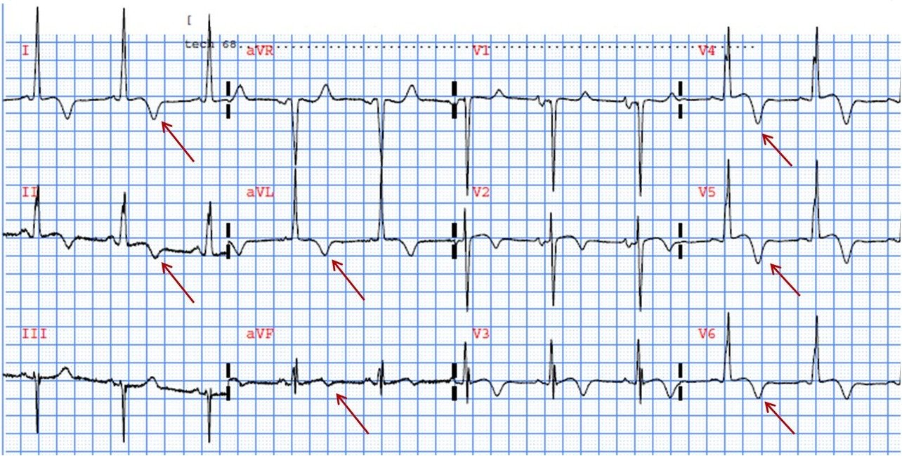
Một số đặc điểm quan trọng giúp phân biệt: 1. Sóng R kéo dài hơn nhiều; đó không phải là một sóng R rất hẹp
2. Khoảng QT dài hơn đáng kể.
3. Không có sóng S ở V4
4. Không có sóng J ở V4
5. Không có điểm J chênh lên ở V2, V3
Điện tâm đồ HOCM này lấy từ ấn phẩm này: Schnell F và cs. The Recognition and Significance of Pathological T-Wave Inversions in Athletes. Circulation 2014;131:165-173.

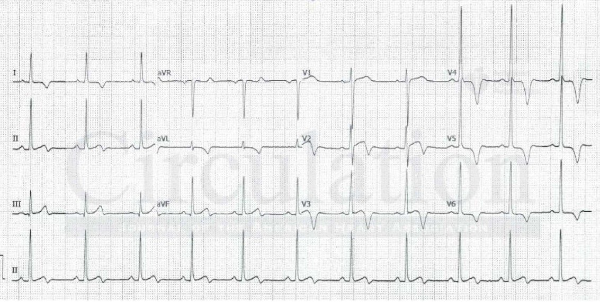
1. Không có sóng S ở V3 hay V4
2. Không có sóng J ở V4
3. Không có cả sóng S lẫn sóng J ở V3 (“biến dạng phần cuối QRS”)
HOCM với sóng R hình kim ở V1 và/hoặc sóng S hình kim ở V6.
Cả hai điện tâm đồ này đều do Life in the Fast Lane cung cấp. https://litfl.com/hypertrophic-cardiomyopathy-hcm-ecg-library/

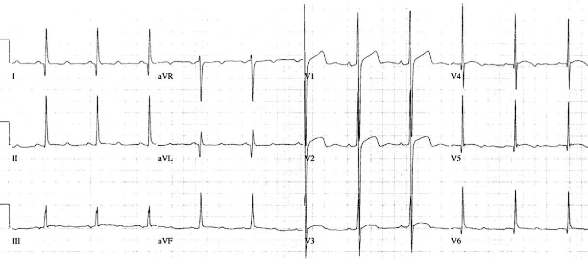

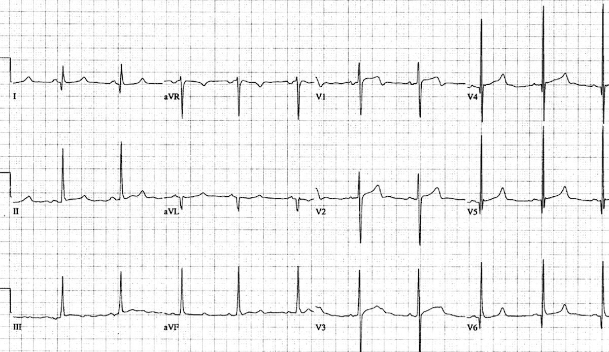
Điện tâm đồ này trông không hề giống BTWI.
Dưới đây là nhiều ca BTWI đã được chứng minh khác từ blog này:

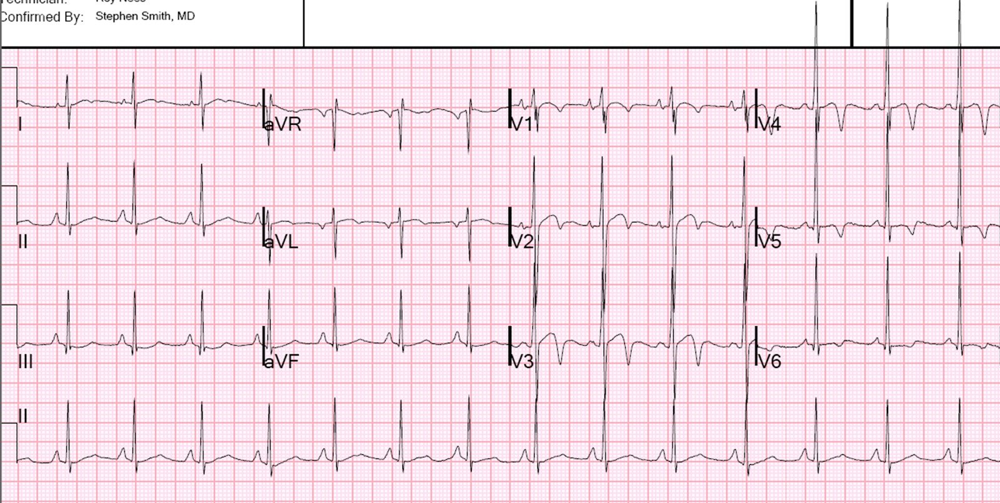


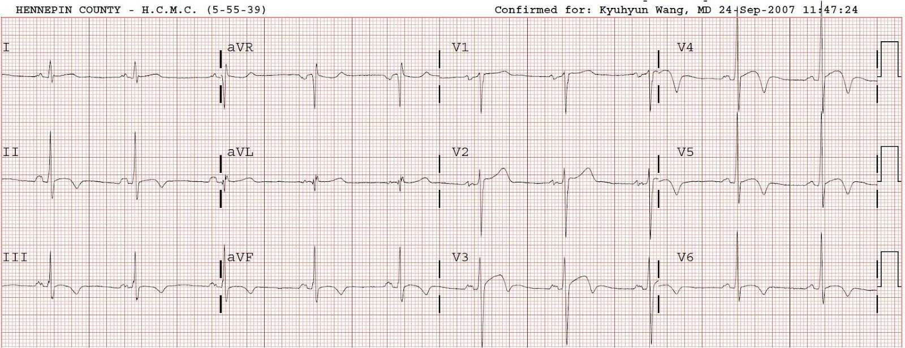

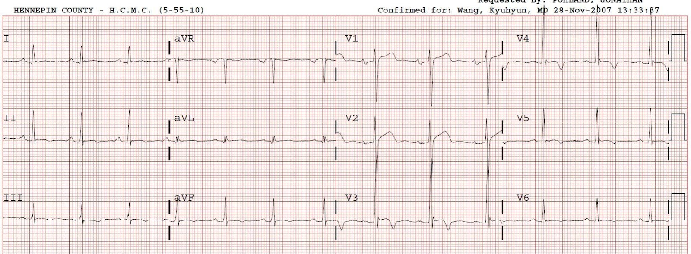


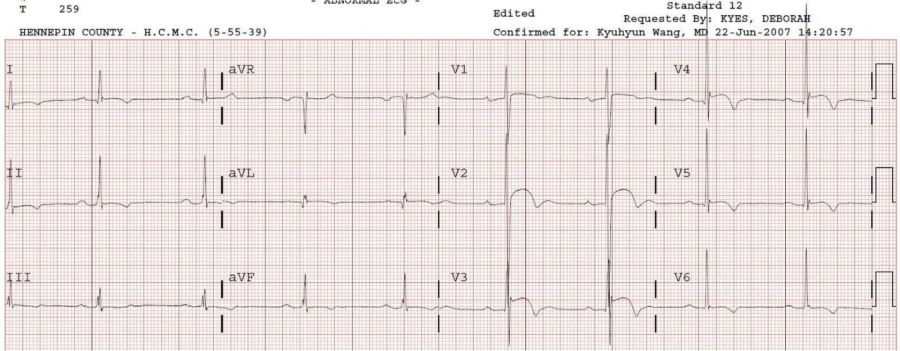

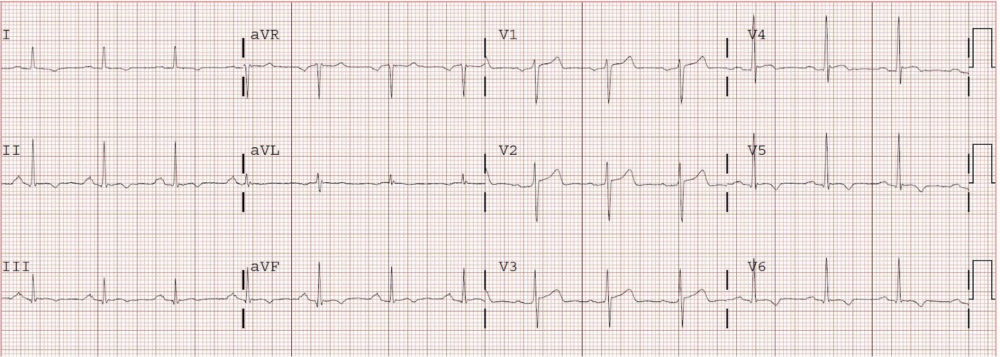

———————————————————–
Bình luận của KEN GRAUER, MD (2/1/2019):
———————————————————–
Tôi rất thích bài viết này của Dr. Smith — vì nó mang tính trải nghiệm lâm sàng. Dựa trên một đợt xem xét toàn diện của Dr. K. Wang trên không dưới 11.424 bệnh nhân — một nhóm 101 ca sóng T đảo ngược lành tính đã được xác định. 10 Nhận xét của Dr. Smith về 101 bản ghi này rất có giá trị lâm sàng và đáng chú ý nhất. Để làm rõ ca bệnh được trình bày ở đây — tôi đã đăng lại 2 điện tâm đồ đầu tiên ở trên (Hình 1). 2 Câu hỏi được đặt ra là: #1) Bác sĩ điều trị có nên lo ngại trước hai điện tâm đồ trong Hình 1 không?; và, #2) Các bản ghi này có gợi ý HCM ( = bệnh cơ tim phì đại – Hypertrophic CardioMyopathy) không? Để giải quyết các vấn đề này và kết hợp những ĐIỂM THEN CHỐT (PEARLS) tôi rút ra từ các nhận xét của Dr. Smith, tôi xin bổ sung những suy nghĩ sau:
- Dù khó nói “không bao giờ” — điều cực kỳ hữu ích là trước hết và trên hết phải xem xét bối cảnh lâm sàng của Điện tâm đồ #1 được ghi trong ca này: Bản ghi này được ghi ở một nam thiếu niên 15 tuổi người Mỹ gốc Phi không triệu chứng đến phòng khám để khám sức khỏe thể thao. Trong bối cảnh lâm sàng này, lý do để “lo ngại” theo nghĩa nghi ngờ một biến cố tim cấp đang diễn ra là cực kỳ khó xảy ra, bất kể các bất thường ST-T trông “đáng lo” đến mức nào. Như rất thường gặp khi đọc điện tâm đồ — bệnh sử lâm sàng là MẤU CHỐT.
- Các bất thường tái cực ST-T có vẻ lành tính là những dấu hiệu điện tâm đồ thường gặp — đặc biệt ở nam giới trẻ người Mỹ gốc Phi. Mặc dù thoạt nhìn, hình ảnh của một số bất thường ST-T này quả thật có thể gây lo ngại — nhưng phần lớn các bản ghi này có một “dáng vẻ” đặc trưng, mà khi có kinh nghiệm sẽ trở nên khá dễ nhận ra.
- Hãy chú ý đến khoảng QT. Tái cực lành tính có xu hướng có QTc tương đối ngắn. NẾU QTc kéo dài rõ rệt — điều này có ích, và nghiêng về bệnh lý (Thận trọng: QTc bình thường không loại trừ nguyên nhân bệnh lý).
- Hãy chú ý đến độ rộng của phức bộ QRS. Tái cực lành tính có xu hướng có QRS hẹp. NẾU QRS giãn rộng dù chỉ một chút — điều này có ích, và nghiêng về bệnh lý (Thận trọng: Đôi khi có thể thấy QRS giãn rộng nhẹ đến vừa ở bệnh nhân không có bệnh tim nền).
- Với tái cực lành tính — các chuyển đạo có sóng T đảo ngược thường có sóng J nổi bật (rõ rệt). (Thận trọng: Không phải lúc nào cũng thấy sóng J trong tái cực lành tính; và đôi khi sóng J có thể xuất hiện khi có nguyên nhân bệnh lý).

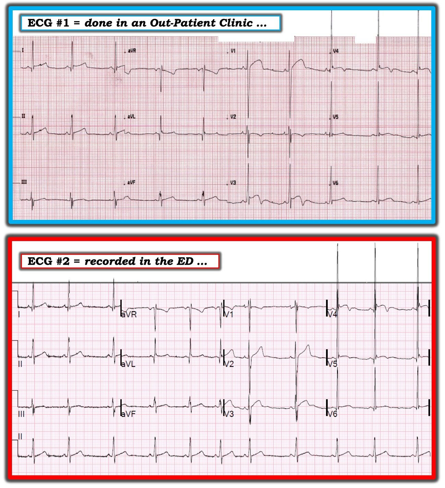
==========================
Về 2 Điện tâm đồ trong Hình 1:
Tôi không nghĩ các dấu hiệu trên Điện tâm đồ #1 là cấp tính. Tuy nhiên, tôi thấy hình ảnh của bản ghi này ở các chuyển đạo ngực phía trước rất bất thường. Tôi nghi ngờ đặt sai vị trí điện cực (lead malposition), ít nhất là các chuyển đạo V1 và V2 vì:
- Có một sóng S sâu bất thường ở chuyển đạo V1 của điện tâm đồ #1 — đặc biệt khi xét đến sóng R tương đối cao ở chuyển đạo này, và việc không có sóng S sâu ở chuyển đạo V2. Ngoài ra, ST chênh lên dạng vòm rõ rệt ở V1 trông thật “lạc chỗ”.
- Chuyển đạo V2 biểu hiện một phức bộ QRS 4 pha kỳ dị (rSr’S’) — với sóng ST-T biên độ thấp ngoài dự kiến so với các sóng lệch ST-T lớn hơn nhiều ở các chuyển đạo lân cận V1 và V3. Nói gọn, hình thái QRST ở chuyển đạo V2 trông chẳng giống chút nào một “chuyển đạo chuyển tiếp”, vốn phải cho thấy hình thái QRST trung gian giữa những gì ta thấy ở V1 và V3.
Điện tâm đồ ghi lại tại khoa cấp cứu ( = Điện tâm đồ #2) ủng hộ nhận định ban đầu của tôi rằng đã có đặt sai vị trí điện cực ít nhất ở V1 và V2 trên điện tâm đồ #1. Lưu ý rằng trong khi có rất ít thay đổi đáng kể giữa 2 bản ghi này ở cả các chuyển đạo chi lẫn các chuyển đạo V4 đến V6 — hình ảnh của 3 chuyển đạo ngực đầu tiên (tức là các chuyển đạo V1, V2 và V3) ở điện tâm đồ #2 khác hẳn so với ở điện tâm đồ #1. Giờ đây có sự tăng tiến hình ảnh QRST bình thường hơn nhiều khi đi lần lượt qua các chuyển đạo ngực. Do sai sót kỹ thuật này — tôi sẽ không bình luận thêm về điện tâm đồ #1.
- Điện tâm đồ #2 nhiều khả năng là bình thường theo lứa tuổi. Như Dr. Smith đã nêu — sóng R biên độ lớn thường gặp ở người trẻ không có lớn các buồng tim. Sóng J nổi bật thấy ở nhiều chuyển đạo (các chuyển đạo I, V4-6), trong đó chuyển đạo có điểm J và ST chênh lên nhiều nhất và sóng T đảo ngược sâu nhất cũng là chuyển đạo có sóng J nổi bật nhất.
==========================
CÂU HỎI: Các dấu hiệu trên điện tâm đồ #2 có gợi ý HCM không? Có chỉ định siêu âm tim trong ca này không?
TRẢ LỜI: Mẹ của cậu bé 15 tuổi này đủ lo lắng để đưa con đến khoa cấp cứu để được đánh giá. Có tiền sử gia đình đột tử. Chỉ riêng 2 yếu tố này đã đủ để biện minh cho việc làm siêu âm tim — và kết quả hoàn toàn bình thường.
BÌNH LUẬN: Câu trả lời cho câu hỏi ở trên về HCM không hề đơn giản. HCM ước tính gặp ở ~1 trên 500 người trẻ trưởng thành, khiến nó thuộc nhóm các bệnh tim di truyền thường gặp nhất. Đây là nguyên nhân nền thường gặp nhất gây đột tử do tim (SCD) ở người trẻ không triệu chứng. Bệnh dễ dàng được khẳng định hoặc loại trừ bằng siêu âm tim — vì vậy làm siêu âm tim rõ ràng là có chỉ định bất cứ khi nào điện tâm đồ sàng lọc cho thấy bất kỳ dấu hiệu nào có khả năng gợi ý HCM. Dù vậy — sẽ có nhiều điện tâm đồ dương tính giả hóa ra không phải do HCM (tăng chi phí do làm siêu âm tim cho những đối tượng này …) — và ngay cả khi phát hiện được, người ta vẫn sẽ phải phân loại trong cả một “phổ” rộng các rối loạn HCM, bao gồm “HCM nguy cơ thấp hơn” với phì đại nhẹ hoặc vừa nhưng không tắc nghẽn, so với các thể HCM tắc nghẽn có nguy cơ cao hơn.
- Mặc dù phần lớn bệnh nhân HCM không có điện tâm đồ bình thường — điện tâm đồ còn xa mới là một công cụ sàng lọc lý tưởng. Có nhiều dấu hiệu điện tâm đồ có thể gặp ở bệnh nhân HCM. Bao gồm tăng biên độ QRS; sóng Q vách lớn; sóng R cao ở chuyển đạo V1; các bất thường ST-T bất thường (không tuân theo các đặc điểm lành tính hơn trong các nhận xét của Dr. Smith ở trên); rối loạn dẫn truyền (tức là LBBB, IVCD); WPW; rối loạn nhịp tim. Vấn đề là không dấu hiệu nào trong số này đặc hiệu cho HCM.
- Bệnh nhân trong ca này dường như đã được ghi một điện tâm đồ sàng lọc như một phần của đợt khám sức khỏe thể thao định kỳ. Mục tiêu hiển nhiên của điện tâm đồ sàng lọc là giảm tỷ lệ đột tử ở các vận động viên khỏe mạnh, không triệu chứng, không bị nghi ngờ có bệnh tim. Ngoài HCM — các bệnh lý khác có thể được gợi ý bởi một điện tâm đồ bất thường bao gồm hội chứng QT dài bẩm sinh, hội chứng Brugada và loạn sản thất phải (RV dysplasia) (tất cả đều rất quan trọng, nhưng là những hội chứng rất hiếm gặp) — khiến lợi ích tiềm năng lớn nhất đến từ việc phát hiện HCM. Dù vậy, cách tiếp cận sàng lọc vẫn còn rất gây tranh cãi và thiếu đồng thuận (và nằm ngoài phạm vi bàn luận của tôi ở đây). Ai nên được sàng lọc? Có lẽ là “mơ tưởng” khi cho rằng sàng lọc điện tâm đồ ngẫu nhiên cho hàng triệu vận động viên trẻ ở Mỹ sẽ phát hiện được các bệnh lý tim mạch có khả năng phòng ngừa một cách hiệu quả về chi phí. Làm siêu âm tim cho tất cả các vận động viên trẻ như vậy (để loại trừ khả năng HCM) có vẻ là tốn kém đến mức không thể thực hiện. Và rồi, còn tác hại tiềm tàng từ các điện tâm đồ dương tính giả thì sao? (tức là cấm vận động một cách không cần thiết … ).
==========================
ĐIỀU CỐT LÕI: Dr. Smith đã mang lại sự phục vụ tích cực cho bệnh nhân và gia đình trong ca này. Siêu âm tim bình thường đã xác nhận nghi ngờ lâm sàng rằng điện tâm đồ #2 thực sự bình thường theo lứa tuổi. Điều này rõ ràng là trấn an, khi xét đến tiền sử gia đình có người đột tử trong ca này.
- Dù vậy — thực tế lâm sàng đáng tiếc là không có cách tiếp cận nào cho vấn đề này là hoàn hảo. Vẫn có những trường hợp, bất chấp mọi nỗ lực sàng lọc tốt nhất của chúng ta, thỉnh thoảng một vận động viên trẻ đột ngột gục chết trong lúc hoạt động thể thao gắng sức (ước tính xảy ra 1-4 lần trên 100.000 người-năm).
- ĐỪNG QUÊN HỎI 2 CÂU HỎI này: Sau khi đã bảo đảm không có tiếng thổi tim rõ ràng bệnh lý hay dấu hiệu đáng lo ngại nào khác khi khám — HỎI Bệnh nhân: i) Bạn có bao giờ cảm thấy choáng váng khi gắng sức không?; và, ii) Trong gia đình bạn có ai đột tử (không rõ nguyên nhân) khi còn trẻ (có lẽ được định nghĩa là dưới 55 tuổi) không? Câu trả lời “CÓ” cho bất kỳ câu hỏi nào trong hai câu này nên dẫn đến tự động chuyển khám đến người đồng nghiệp bác sĩ tim mạch thân thiện của bạn.